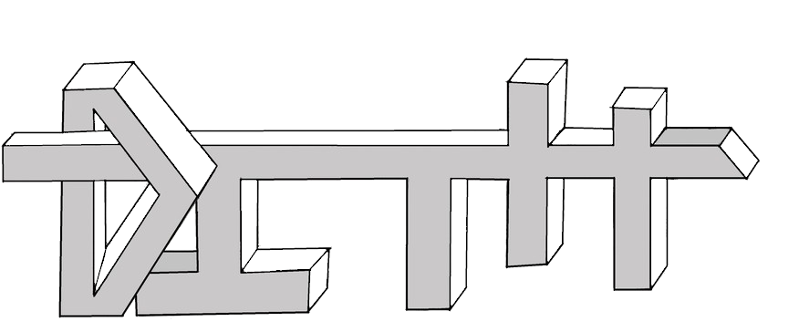

Home

The game Dith takes place in a post-apocalyptic world during the "Theldark" era, where humans became very dependent on robots. However the energy used for robots is progressively decreasing involving their dysfunction in the whole world. A scientist, the "Doctors", discovers an energy source : "the Hyperion". This energy is able to feed again robots ! Too old to move, the scientist transmits his mind in a cube containing the Hyperion, the DITH.
The player will have to lead the DITH through different world until the power station "Ivanof" in order to save the world.
Download
Below links to download :
Specification note
Reports :
first written report
second written report
last written report
Download the game (old executable versions) :
First presentatin version
Second presentation version
Third presentation version
Download the game (final installer versions) :
Windows 64 bits
Windows 32 bits
Team
Ivan, "Ivanof":
During my childhood, I was interesting in computers only for online games.
But as I grew up, I started to wonder how the computer I use is working. Then I searched
information about the digital world through Youtube videos.
Knowing the international geopolitic situation, I want to study in the cyber-security field during my
course in EPITA. I'm not a gamer, so this project will help me to learn new things about video games creation.
When I was young, I generally liked creating. So I liked to draw or games as "Kapla" and "Lego".
My first meet with programming was with "Mindstorm", a Lego robot. During my adolescence, I was interested in photography for the artistic and technological sides, but this field was not enough related
with computing. Later I discovered drones, for the top range we can have hight quality camera and high flight quality.
On computing side, I began to be interested on computer set up. But I did not have the knowledge to understand the exchange between components. I began researches on cybersecurity when newspapers talked about attacks on data servers.
Further, I subscribed to Youtube channels as "O1net tv" and "Nowtech", those channels helped me to open my mind on several subfields of the digital world.
Rémi, "Hyperion":
Since the 2nd, I became interested, then I became passionate about IT. Firstly for the hardware part, then for
the network part and finally for the code. In the project made in ISN, we had to code the network part
between a server and a client in Python, I liked this part. So I became passionate by this field and then the idea of making my course at Epita came to me. Another point which encouraged me in the computing field
: my parents were not fan of my passion for explosives and dangerous chemistry. Video games came in
my life later, at the end of my 2nd.
Simon, "Doctors":
I started to play video games 10 years ago and started to look closer my computer 5 years ago.
I have always been impressed by all these little components which allow me to play on Internet.
After having understood basis of IT in the college, I wanted to make of this hobby my job. Today I am completely in my world. I decided at the beginning of this year to go with my current friend. It was easier as we had already talked about the project.
The more days passed and more it was clear, this project allowed me to discover more on graphics, programming and artificial intelligences.
News
06/12/2018 : Final version available and teaser by clicking here
06/08/2018 : 42th version of the project available with installer !
06/04/2018 : New type of tower with seeker head rockets
06/01/2018 : Maze level available now !
05/25/2018 : Project report written in 5 hours and sent 30 min after the deadline
06/19/2018 : 6th level available + bug fixed in the 5th level
05/04/2018 : Color choice of the avatar available !
05/01/2018 : Second Presentation
04/30/2017 : 5 levels are now available !
04/27/2018 : Creation of a 4th level with a time limit !
04/25/2018 : Creation of a 3rd level
04/24/2018 : New main menu !
03/15/2018 : First Presentation
03/03/2018 : first executable game version
03/03/2018 : first scene added to the game
02/2018 : Fabien left the groupe
12/22/2017 : team's creation ( Rémi,Simon,Ivan,Fabien)
Contact
Credits
Unity : cross-platform game engine
Mono Develop : C# development environment
Paint : Image editing software
NotePad++ : Code editing software
freemusicarchive.org : Archival storage website of free music
Sketchfab : Hosting site and 3d object reader
Roblox : Used for the soundtrack